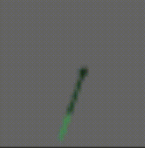
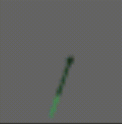

Program 1 Extension: Time Animated, Illuminated Tuft Vector Field
This visualization, as an extension of prog1, seeks to display the same type of data, wind speed and direction over a set area in the Houston/Galveston gulf coast, in a new way, a grid of tufts bent and rotated in accordance with the data and colored using an approximation of phong shading streamlined by texture mapping. These tufts will be animated via time, showing a different value across a 24-hour time period each frame. Please clink the link to the left to run the project for yourself in-browser, and see it firsthand. Below is the animation in both color and grayscale (slowed down for gif representation) And this is the animation on the level of a single tuft:

References:
Tuft flow visualization concept:
Tuft Flow Visualization by Wei Shen and Alex Pang
Line illumination:
Fast Display of Illuminated Field Lines
by Detlev Stalling, Malte Zöckler, and Hans-Christian Hege
Wind Data:
https://windalert.com/windlist/28.961/-94.908
Air density approximation:
http://www.ajackson.org/wview_files/
Google Maps zoom level based on equation from:
https://groups.google.com/forum/#!topic/google-maps-js-api-v3/hDRO4oHVSeM
And this is the animation on the level of a single tuft:

References:
Tuft flow visualization concept:
Tuft Flow Visualization by Wei Shen and Alex Pang
Line illumination:
Fast Display of Illuminated Field Lines
by Detlev Stalling, Malte Zöckler, and Hans-Christian Hege
Wind Data:
https://windalert.com/windlist/28.961/-94.908
Air density approximation:
http://www.ajackson.org/wview_files/
Google Maps zoom level based on equation from:
https://groups.google.com/forum/#!topic/google-maps-js-api-v3/hDRO4oHVSeM
Name: Alex Perrotti
Class: CMPS 161/L:
Data Visualization
Quarter: Winter 2019
Run It Yourself
Technical Paper
User's Guide
Vis Code
Data Code
Code Documentation